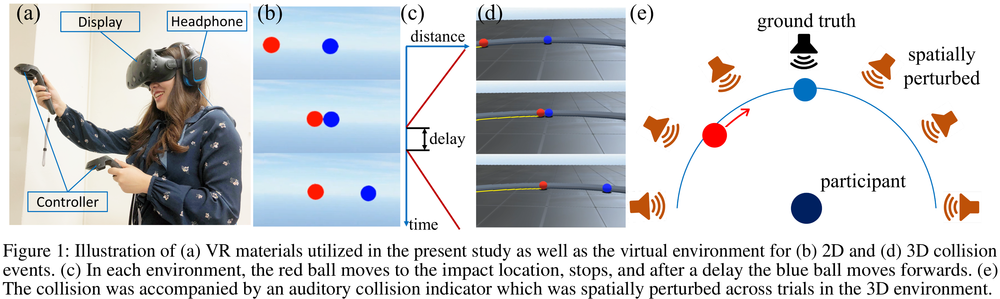

hide forever |
hide once
hide forever |
hide once
Spatially Perturbed Collision Sounds Attenuate Perceived Causality in 3D Launching Events
Duotun Wang*1 |
James Kubricht*2 |
Yixin Zhu*3 |
Wei Liang†1 |
Song-Chun Zhu3 |
Chenfanfu Jiang4 |
Hongjing Lu2 |
*equal contributor | † Corresponding Author |
|
1Beijing Institute of Technology |
2UCLA Computational Vision and Learning Lab |
3UCLA Center for Vision, Cognition, Learning and Autonomy |
4Computer Graphics Group, UPenn |
 |
Abstract
When a moving object collides with an object at rest, people immediately perceive a causal event: i.e., the first object has launched the second object forwards. However, when the second object's motion is delayed, or is accompanied by a collision sound, causal impressions attenuate and strengthen. Despite a rich literature on causal perception, researchers have exclusively utilized 2D visual displays to examine the launching effect. It remains unclear whether people are equally sensitive to the spatiotemporal properties of observed collisions in the real world. The present study first examined whether previous findings in causal perception with audiovisual inputs can be extended to immersive 3D virtual environments. We then investigated whether perceived causality is influenced by variations in the spatial position of an auditory collision indicator. We found that people are able to localize sound positions based on auditory inputs in VR environments, and spatial discrepancy between the estimated position of the collision sound and the visually observed impact location attenuates perceived causality.
Index Terms: Causl Perception, Virtual Reality, Intuitive Physics, Visual Capture, Launching
Spatially Perturbed Collision Sounds Attenuate Perceived Causality in 3D Launching Events
Duotun Wang*,
James Kubricht*,
Yixin Zhu*,
Wei Liang†,
Song-Chun Zhu,
Chenfanfu Jiang,
Hongjing Lu.
IEEE VR 2018, Reutlingen, Germany
Paper, Video
@article{wang2018spatial,
title =
{Spatially Perturbed Collision Sounds Attenuate Perceived Causality in 3D Launching Events},
author = {Wang, Duotun and Kubricht, James and Zhu, Yixin and Liang, Wei and Zhu, Song-Chun and Jiang, Chenfanfu and Lu, Hongjing},
booktitle = {IEEE Conference on Virtual Reality and 3D User Interfaces},
year = {2018}
publisher = {IEEE}
}
The authors wish to thank Hanlin Zhu, Shu Wang, and Feng Gao for assisting the experiments at UCLA. The work reported herein was supported by DARPA XAI grant N66001-17-2-4029, ONR MURI grant N00014-16-1-2007, NSF grant BCS-1353391, and a NSF Graduate Research Fellowship.